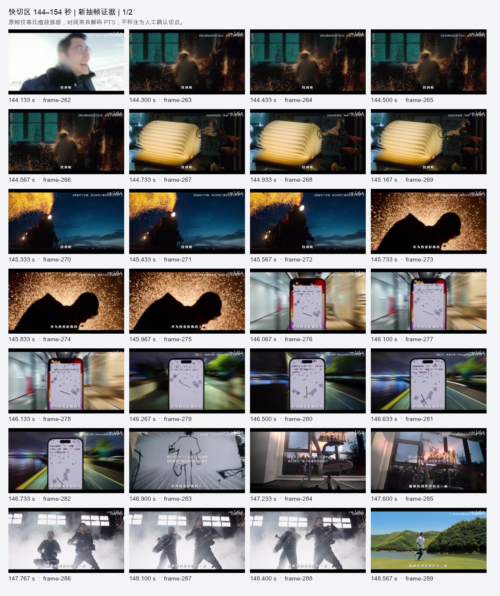
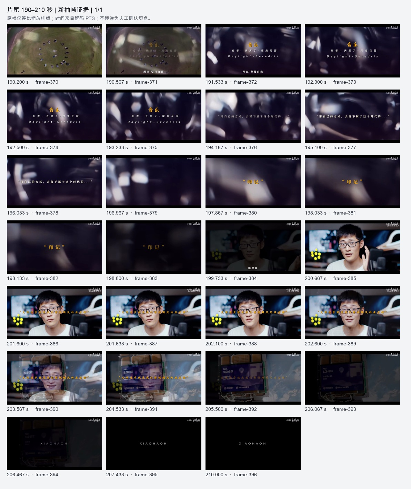

REFERENCE ANALYSIS · 2026.10.20
样片分析，优化前后。
切镜与取样覆盖改善；语义、运镜和对白时间对应仍需人工确认。
同两条真实短片，保留旧结果重跑。以下结论区分检测输出、独立复核与尚未解决的问题。
5 / 5短片硬切吻合独立核对
48 → 397长片独立取样帧
85 / 87长片转写接纳段数
270,428本轮全部尝试实际 Token
01 · 旅行横移短片
首尔旅行转场｜冷面公主.mp4 · 00:12.567
| 观察项 | 优化前 | 优化后 |
|---|
| 取样画面 | 39 帧 | 23 帧 |
| 镜头层 | 17 个旧阈值区间 | 5 处硬切 / 6 个区间 |
| 模型内容层 | 12 个描述段 / 8 个结构段 | 6 个内容段 / 6 个结构段 |
| 语音进入模型 | 否 | 否：置信度低，2 段排除 |
| 结论 | 观察项 | 优化前 | 本次结果 |
|---|
| 已证实改善 | 硬切识别 | 旧检测形成 17 个区间，模型又把人物入画、居中、离场拆成内容段。 | 新 5 处硬切与独立邻帧确认位置吻合，划成 6 段连续拍摄镜头；仅能证明这条短片的 5 处切点。 |
| 已证实改善 | 不可靠转写 | 未使用语音，却标记 audio_analyzed=true，容易让人误以为已融合。 | 语种置信度 0.3068，明确标为待核对；接纳 0 段、排除 2 段，audio_analyzed=false。 |
| 仍待改进 | 运镜与剪辑机制 | 已有内容描述混合了人物移动与镜头切换。 | DS 仍把首镜 1.3 秒人物入画说成切镜，并称固定机位为主。实际是持续横移；不能照此复刻剪辑方法。 |
| 仍待改进 | 内容段覆盖 | 内容段与镜头未分层。 | 现在有独立 shots / content_segments，但内容段在 10.800–10.967 秒留空，末段至 12.533 秒。内容段数与镜头数相同并不代表语义准确。 |
五处切点，逐处核对
| 独立邻帧复核 | 新检测 | 绝对差值 |
|---|
| 00:02.600 | 00:02.600 | 0.000000 秒 |
| 00:04.733 | 00:04.733 | 0.000333 秒 |
| 00:06.767 | 00:06.767 | 0.000333 秒 |
| 00:08.700 | 00:08.700 | 0.000000 秒 |
| 00:10.867 | 00:10.867 | 0.000333 秒 |
这是本片的 5 处核验，不是算法在其他视频上的准确率。独立记录用邻帧排除了同一场景内的横移误报。
展开新内容段：查看原始分析表述
开场建立人物与城市氛围红砖街巷与金属架角落，随后切为年轻女性制服造型的近景人像。
展示旅行中的餐饮体验街边黄色标线与塑料筐，切至咖啡厅窗边，桌面摆满寿司与饮品，女性举杯示意。
过渡到互动体验场景咖啡厅内景侧拍，随后进入布满照片墙的自助拍照亭，女性拿照片卡摆动身体。
展示拍照成果与情绪互动楼梯间后切至女性手持两张拍立得照片面向镜头笑。
外景造型展示室内镜面反射暖色灯光，随后户外卷帘门涂鸦前女性摆姿势。
室内收尾，回归日常氛围商场休息区，女性托腮坐于大理石桌旁，桌上饮品与纸袋，镜头最后扫向周边座位。
展开新叙事结构
场景推进由街景转入咖啡厅用餐，展示旅途中的饮食体验
活动展示呈现自助拍照亭的娱乐体验，突出人物活泼动作
02 · 人物口述与作品混剪
影视飓风那些无法超越的片段｜小壕h.mp4 · 03:30.048
| 观察项 | 优化前 | 优化后 |
|---|
| 取样画面 | 48 帧 | 397 帧 |
| 镜头层 | 99 个旧阈值区间 | 85 处硬切 / 86 个区间 |
| 模型内容层 | 22 个描述段 / 7 个结构段 | 33 个内容段 / 17 个结构段 |
| 语音进入模型 | 否 | 部分：85 段接纳、2 段排除 |
| 结论 | 观察项 | 优化前 | 本次结果 |
|---|
| 已证实改善 | 首镜与长片取样 | 首个检测点 14.667 秒由人物动作触发；全片只有 48 张输入帧。 | 首个硬切为 18.567 秒，与独立邻帧复核一致；397 张独立帧分 9 个窗口处理，再汇总内容，保留每个窗口来源。 |
| 已证实改善 | 语义主线 | 约 60.967–105.550 秒笼统归为工作实态与压力。 | 新结果已识别拉大尺度、宇宙与意义追问；接纳 85 段转写，排除 2 段。置信度筛选不能替代逐字校对。 |
| 已证实改善 | 密集画面与片尾 | 144–154 秒只有 7 帧；191 秒后仅 1 帧，尾部概括为草坪后黑场。 | 对应增加到 53 帧和 25 帧；现在能描述音乐署名、引语、印记、人物回场、无限进步与作者尾卡。 |
| 仍待改进 | 语音的时间对应 | 没有融合语音。 | 汇总把“过度美化过去／不如尝试”写进 148.4–152.467 秒，但转写在 163.58–175.26 秒；把突破话题写进 152.467–156.2 秒，转写在 175.26–183.72 秒。语义融合有用，局部对白仍错位。 |
| 仍待改进 | 镜头边界与内容区间 | 99 个旧阈值区间不是人工镜头真值。 | 新 85 个硬切、86 个硬切区间与 19 处渐变候选也不等于完整镜头表；内容段累计空白 5.314 秒，128.1–129.8 秒重叠。叠化及细节仍需核对。 |
长片输入帧的时间分布
每条竖线是一张送入视觉分析的独立帧。144–154 秒：7 → 53 帧；191 秒后：1 → 25 帧。窗口交界处重复上下文不重复计帧。

密集画面复核
片尾画面复核后续本地核对标记冻结的分析结果保留不变；界面已增加按本地 ASR 词时间映射的语音证据与内容段重叠标记，可展开核对。模型原始对白错配仍存在，此步骤没有新增模型调用。
展开新内容段：查看原始分析表述
开场建立人物、讲述场景与焦虑主题男子戴眼镜、穿深色厚外套和牛仔裤，怀抱白色长焦镜头坐在霞光海岸边，侧头远望、低头或抬手比划，呈沉思讲述状态。旁白此时讲述把事拉长看会看到人生之苦、家庭关系、工作与人生下半场的焦虑。
以多场景蒙太奇外化焦虑与压力连续并置多重压力画面：人物背影、树林边打电话低头、室内白T恤伏案托腮、暗处弯腰俯身、船上抱头掩面、电脑前疲惫工作。旁白提到很强的焦虑感、觉得未来没有希望、特别难受。
以字卡点题并完成情绪转场车内逆光剪影与雨中车窗画面转暗，短暂黑场后出现黑底黄色引语字幕卡；随后切到海边日落全景，人物背影走向远处，三脚架长焦相机与太阳形成剪影，画面叠加引语字幕，最后回到开头男子抱镜头微笑对镜。旁白讲述把未来期待缩短到一天或几小时内。
口述观点并以飞行意象具象化期待戴眼镜青年在海边黄昏对镜头讲述，随后切入橙红晚霞中飞机剪影横越天空、成群飞鸟在浅粉橙天空散开的空镜，旁白提到接下来一小时吃到早餐、点上热巧克力，期待感更足。
以落日海景渲染短暂美好与期待背背包人物站在海边望紫粉海面的剪影、低角度逆光碎石滩、海平线红日与港口吊机剪影、金色海面上行驶的渔船、夕阳礁石海面，以及前景模糊人头剪影映衬的大红日，构成黄昏海景蒙太奇。
收束短期期待话题并转向宏观追问两人在落日逆光中站立于海边的黑色剪影，远处岛屿与船只轮廓；随后转为黑场白字字幕收束该观点，再切到一名穿浅灰连帽衫的人背对镜头走过园林小径，引出旁白“当然反过来说”。
建立哲思氛围并引入星球尺度男子穿浅灰连帽卫衣、双手插兜站在两片深色镜面墙之间，背景是樱花庭院，画面呈对称纵深；随后切为正面与侧脸近景，他戴黑框眼镜，目光向画外上方移动，神情平静。旁白此时谈及人类历史、悲欢离合都落在一颗小小蓝色星球上。
将个体追问提升到宇宙尺度地球全貌画面出现，蓝色海洋与白色云层占据中央，边缘可见空间站或卫星结构，黑色宇宙背景。画面从个体近景跳到星球尺度，呼应旁白中的蓝色星球。
以日常与旅途场景承载意义追问男子走在白色多层办公空间的硬朗线条间，切到抬望近景；再在器材工作室低头操作相机稳定器，切侧脸特写；随后戴耳机坐在飞机客舱靠窗位置望向舷窗外。旁白追问似乎做什么都没有意义、最终化为尘土，那么为什么还要做好事。
把追问延续到行走与海景，并直接面向观众男子在爬满藤蔓的砖墙前低头侧脸，在樱花树与石碑庭院中横向行走，随后穿白色卫衣站在帆船上背对镜头望向海面与远船；最后正面近景面对镜头说话并微抬右手。旁白说这个问题困扰很久、很想看到答案。
承接发问，直接面对观众戴眼镜男生穿白色连帽衫在室内面对镜头讲述，背景为白色柜体与生活物品，字幕出现“我很想看到你的答案”。
以多样工作场景呈现努力的不同侧面密集工作场景组接：多人在树林石阶上抬蓝色乒乓球桌向上走、切脚步特写；男生在蓝天下手持相机和麦克风调试；坐在海边草地上持麦克风说话；在室内用电脑并切面部特写；多人背影围看屏幕；户外围看设备；戴耳机在剪辑台前工作；最后在黄色挖掘机旁把笔记本放在腿上使用。旁白谈那时候只知道埋头苦干、无形成压力和焦虑感。
回到讲述空间，呈现自我怀疑男生穿米色T恤、戴口罩站在红砖建筑前人群中手持纸卷，周围工作人员走动；随后回到室内，男子穿黑色T恤在沙发前近景面向镜头说话，镜头先略向下，表情收敛。旁白问我到底努力了吗、别人觉得我够努力吗。
用肢体与现场画面外化焦虑和自责白色背景前男子穿白T恤双手抱头、神情紧绷，随后侧脸低头；再切到他双手握相机站在深色工作现场，旁边有人举着平板，背景有字牌，他露出略显勉强的笑。旁白继续自我怀疑与焦虑。
剖析投入与结果的落差短暂黑场后回到室内，男子穿白T恤坐在显示器与麦克风前对镜头讲述，表情认真略带苦笑，旁白说一直觉得把所有东西都堵在了这里，却得到这样的结果。
以深夜疲惫姿态具象化超载感男子穿深色连帽外套坐在夜间办公桌前面对笔记本电脑，屏幕蓝光映在镜片上，切侧脸特写；随后在昏暗房间中半躺举着手机，前景有虚化遮挡。旁白提到用网上一段话与自己和解。
转到自我和解与哲思引述明亮白色窗帘室内，男子换成白色连帽卫衣，双手在胸前做解释手势，讲述自己和解的方法以及关于宇宙结局注定、归于死寂的那段话。
以辽远空镜呼应过程主题雪原暮色中，几名深色衣物的人围着一只巨大白色气球站立，随后切为高空俯拍，雪地上只有几个人影和放射状脚印。旁白说过程才是最重要的、这是我们能够改变的唯一的事。
由和解转向创作者身份与行动态度室内暖光下戴黑框眼镜男子侧脸说话，身旁取暖器发亮；再切到山谷间他穿黑T恤手持相机仰头，背后高山与云层；随后黑场字幕“别急着赶路”。旁白说别急着赶路，去感受。
集中展示作品奇观与影像探索成果高密度作品混剪：太空中卫星与地球云层、卫星屏幕显示编号信息；高空气球群掠过；白色火箭在蓝天垂直升空拖着火焰烟迹；雪地边众人举拳欢呼与男子大笑近景；暗调室内人影与橙色光点；暖黄光下摊开的立体书与神兽插画；夜色中蒸汽火车喷出金色火星；暗色背景下金色火花飞溅与人物剪影。多处叠加作品片名浮层，旁白谈到作为热爱影像的人、从宏观与微观观察宇宙。
从火花奇观转入多形态影像表达打铁花金色火星中黑色剪影横穿画面，随后切到手机屏幕特写、夜间第一人称骑行或驾驶视角、一段动画分镜、室内窗边办公椅与晚霞；再切到窗台上的人偶模型与夕阳，两名穿黑色战术背心者手持大型摄影机在浓烟仓库内低角度仰拍。旁白提到你都能找到属于这个维度。
以自然与人文奇观支撑尝试主题穿白衬衫男子在湖畔草地奔跑、背景青山与水面；切到霞光中的雪山尖峰与云海之上的雪山俯瞰；再切到蓝色海水中鲸鲨游动、另一条鲸类下潜；随后赤膊男子在暗色环境舞动燃烧铁棒，火花四溅填满画面。旁白谈人总是过度美化过去或担忧未发生之事，不如都去尝试一下。
从地面静观转向宇宙视角，完成意象收束穿灰色连帽外套的人背对镜头站在海边木栈道上，前方升腾水雾或巨浪；随后空中俯视红白双翼特技飞机、透过座舱罩可见驾驶员；再切到太空视角的地球边缘与绿色极光、地球弧线与灯光，最后以黑色圆盘遮住太阳、周围露出明亮光晕的日食画面收束。旁白说明确了这一点之后，必须想办法突破缺少的东西。
以宏观微观对照具象化观察主题黑背景日食轮廓、正对镜头内部的环形镜筒与白色反光点、暗场中米黄色块状物与放射状丝缕、白色针状结晶呈放射花形、暗场中半透明绿色微生物漂浮，最后大量白色针状结晶叠化出人物侧脸上半身，前景结晶与抬手动作并置。旁白谈到抬头观察宇宙，也低头从微观发现平日未注意到的变化。
从微观意象回到人物情绪晴朗蓝天背景下，一位穿白衬衫的男子侧面近景，闭眼再睁眼、仰头迎光，情绪平静。旁白说这是属于这个维度的。
以口述提出尝试与行动的观点从昏暗室内过渡到明亮厨房环境，戴眼镜、穿黑T恤的男子面对镜头讲话，手势丰富，背景白色橱柜与灯带。旁白谈人总是过度美化过去或担忧没有发生的事，不如都去尝试。
强调突破舒适圈的核心行动观暗色工作室中，另一戴黑框眼镜、穿白色T恤男子面对镜头口述，背景有显示器、黄点灯光与麦克风。旁白说明明确这一点后，绝不能待在自己的舒适区，必须想办法突破缺少的东西。
以行进场景延续突破主题车内环境，一位戴黑框眼镜的年轻男子坐在驾驶座侧系安全带，旁边有穿格子衬衫的中年男子。旁白继续谈突破缺少的东西。
以团队群像呼应决心与凝聚力公路场景中一群人站成一排合影，地面摆放多台无人机，天上有无人机悬停，团队竖拇指、比手势；随后切为俯拍草地上多人分散站立或躺卧围绕成近似圆形，画面可见道路与水面边缘。旁白说当我们铁了心想做成这个片子时，整个世界都在奔向你。
以字卡提炼主题关键词暗色虚化背景中依次出现“音乐”字样及曲目信息卡，随后切换为白色引言字幕卡和金黄色“印记”字幕卡，画面以文字信息为主。旁白谈坚持自我、展现坚持与热爱、用自己的方式留下属于这个时代的印记。
人物出镜点出品牌理念戴黑框眼镜、穿白色上衣的男子坐在有显示器与黄色灯点的室内环境中近景讲述，画面中逐渐叠加金黄色“无限进步”等相关字幕。旁白说明无限进步是影视飓风的slogan。
以装置画面强化品牌记忆点画面转为带有透明屏幕装置的近景，屏幕内显示男子头像与“No.”编号内容，装置外可见线缆与背景地貌，屏幕内容随帧变化。旁白再次念出无限进步。
片尾署名收束黑底画面中央显示白色“XIAOHAOH”署名，右上角保留平台水印，画面保持至片尾。
展开新叙事结构
开场建立建立人物、霞光海岸与长焦镜头，借旁白引出把人生拉长后的焦虑主题。
压力蒙太奇以背影、通话、伏案、抱头、电脑前等多场景外化焦虑、无助与疲惫。
视角转折通过车内剪影、黑场和黄色引语字卡提出缩短期待的观点，并以日落海岸和人物回切完成转场。
短期期待铺陈人物口述与飞机、群鸟、海边剪影、渔船、礁石落日等黄昏空镜，具象化近处的期待与美好。
宏观追问转向以双人剪影、黑场字幕和园林背影过渡，转至镜面樱花庭院中的人物凝望，引出人类历史与蓝色星球的追问。
宇宙尺度与意义困惑插入地球全景，再以办公空间、器材操作与飞机舷窗表现个体日常，呼应做事是否有意义的困惑。
行走与直面观众借砖墙、庭院行走、帆船海景和室内正面口述，把问题直接抛给观众。
工作现场组接用搬桌、调试、采访、剪辑、工地等多场景呈现埋头苦干与努力的不同侧面。
自我怀疑剖析从红砖建筑前人群回到室内近景，配合抱头与工作现场画面，剖析努力是否足够的自我怀疑。
深夜超载以夜间办公、屏幕蓝光、昏暗房间半躺看手机表现投入后的疲惫与超载。
和解与过程主题在明亮室内讲述自我和解与宇宙结局的引述，再以雪原气球与高空脚印把落点放到过程最重要。
创作者行动态度用暖光口述与山谷持相机形象塑造创作者身份，以别急着赶路完成情绪转场。
作品奇观混剪集中展示卫星、火箭、高空气球、雪地欢呼、立体书、蒸汽火车、打铁花、雪山、鲸鲨、特技飞行、极光、日食等作品画面，呼应热爱影像与观察世界。
宏观微观观察以日食、镜头内部、显微结晶、微生物与叠化人物，具象化抬头观察宇宙与低头发现微观变化的主题，最后回到蓝天人物情绪。
尝试与突破口述通过厨房、工作室与车内多段口述，谈过度美化过去、不如尝试，以及突破舒适圈的必要。
团队群像高潮以公路无人机团队合影与草地俯拍圆形人群，呼应铁了心做成片子的决心与团队凝聚力。
字卡点题与片尾署名用音乐信息、引言与印记字卡提炼主题，人物近景与装置屏点出无限进步，最后以黑底署名收束全片。
03 · 全部尝试，全部计入
用量来自供应商回执。失败任务里已成功的分块被后续复用；没有把失败任务整笔剔除，也没有把复用当作免费。
| 本轮尝试 | 任务结果 | 实际调用 | 总 Token | 保留到最终结果 | 额外失败 Token |
|---|
| 短片 | 成功 | 1 | 11,460 | 11,460 / 1 次 | 0 |
| 长片 · 第 1 次 | 失败（局部已保留） | 7 | 136,020 | 116,518 / 6 次 | 19,502 |
| 长片 · 第 2 次 | 失败（局部已保留） | 4 | 85,428 | 51,672 / 3 次 | 33,756 |
| 长片 · 最终汇总 | 成功 | 1 | 37,520 | 37,520 / 1 次 | 0 |
| 本轮合计 | | 13 | 270,428 | 217,170 / 11 次 | 53,258 |
成本口径旧版两条分析共 36,951 Token；本轮全部尝试 270,428 Token。其中 217,170 Token 对应最终保留的调用，另有 53,258 Token 用于未保留的失败调用。二者相加等于本轮总量；最终汇总任务自身的用量不是长片总用量。
| 与旧版比较 | 旧版实际 Token | 新版保留调用 Token | 新版全部尝试 Token |
|---|
| 短片 | 16,270 | 11,460 | 11,460 |
| 长片 | 20,681 | 205,710 | 258,968 |
失败原因与逐次回执
short · 完成
任务记录 · 全部调用回执
long-attempt1 · 模型引用的证据帧不在对应内容区间内
任务记录 · 全部调用回执
long-attempt2 · DeepSeek 返回的字段不符合约定（字段 $.structure[1]，规则 additionalProperties）；本次结果未保存
任务记录 · 全部调用回执
long · 完成
任务记录 · 全部调用回执
第 1 次保留 6 个有效分块，另 1 次因证据时间不在区间内未保留；第 2 次保留最后 3 个分块，汇总因额外字段失败；最终只重做汇总，沿用 9 个分块。缓存读取未发生新的视觉调用，原调用消耗仍在表中。
范围之外另有首页单节点自然语言修改链路测试 1,866 Token，独立列账，不混入两条样片的 270,428 Token。查看该测试回执
04 · 结论的适用范围
依据两条同源素材的冻结基线、新流水线记录、旧独立抽帧复核及实际用量回执。没有重新听审音频，没有长片全镜头人工真值；未外推通用准确率。
长片边界包括渐变、黑场与相似构图变化；本报告没有把 86 个硬切区间称作完整镜头真值，也没有用内容段数量代表质量。语音置信度与对白时间匹配是不同问题。